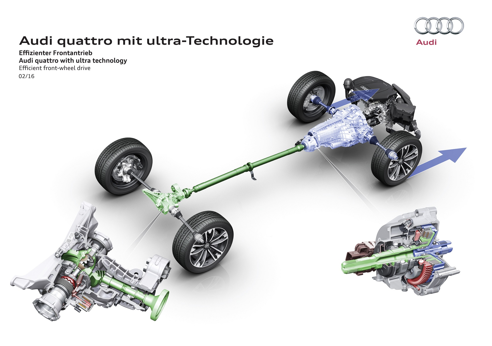
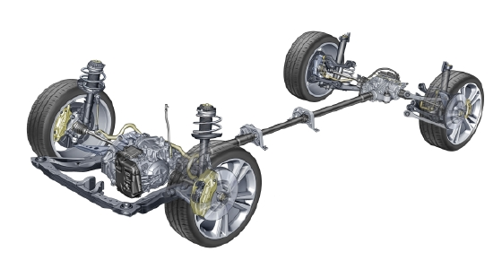

Système De Transmission


Table des Matière :
- Introduction :
- Généralité
- Définition
- Fonction Global
- Les différentes modes de transmission
- Eléments de transmission
- Eléments de Transmission :
- Moteur
- L'embrayage
- Definition
- Fonction Global
- Les constituants d'embrayage
- Fonctionnement
- Système d'amilioration de la transmission de la puissance
- La Boite à Vitesse
- Définition
- Fonction d'une boite de vitesse
- Nécessite d'une boite de vitesse
- Déscription d'une boite de vitesse
- Composition d'une boite de vitesse
- Le Pont
- Définition
- Composantes
- Le fonctionnement